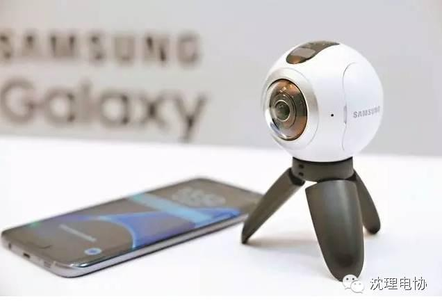
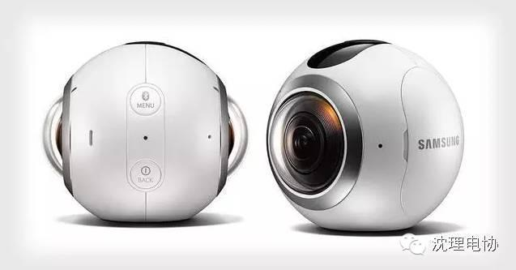

又是韩国首发！三星Gear 360全景相机开卖
沈理电协 2016年5月10日 21:38
它配备有两个1500万像素、f/2.0光圈超广角镜头，各负责前后180度视野的拍摄，的售价约合人民币2276元，国内用户打算购买的话可能需要再多等待一段时间。



Gear 360配备有两个1500万像素、f/2.0光圈超广角镜头，各负责前后180度视野的拍摄。除了单张180度或者全景最高3000万像素照片以外，Gear 360还最高支持4K/30fps视频录制，而IP53级防尘防水设计让它可以轻松应对各种户外拍摄环境。另外在兼容性方面，Gear 360可与Galaxy S7/S7 Edge、Galaxy S6\S6 Edge\S6 Edge Plus以及Galaxy Note 5等多款设备配对使用，所录制的全景视频如果在Gear VR上观看更是能获得完整的沉浸式体验。不仅如此，前段时间谷歌称Gear 360可以用于谷歌街景的拍摄，想与全世界网友分享周遭环境时，这个小球一定能帮上忙，感兴趣的朋友不妨了解一下吧！
信息部\张晋鹏
继续滑动看下一个